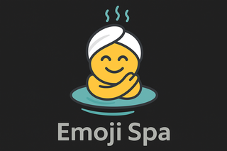

Emoji SpaGenerating emoji list...
Choose light, dark, or follow your system theme.
Reset emoji usage counts used to power the Frequently Used and Recently Used sections.
Choose which automatically generated sections are shown in the picker.
Per-emoji usage counts based on how many times you have copied each emoji.
| Emoji | Name | Category | Count |
|---|
All shortcuts also work when navigating with the keyboard inside the picker.